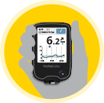

Why prick when you can scan?2
-
 Apply sensor
Apply sensor -
Scan sensor
-
Get reading
Testing your sugar levels several times a day can be a real hassle. Now there is a new way to check glucose in a flash. The FreeStyle Libre flash glucose monitoring system is a revolution in glucose monitoring because of the way the glucose data is captured - through a quick scan2 of the reader over the sensor.